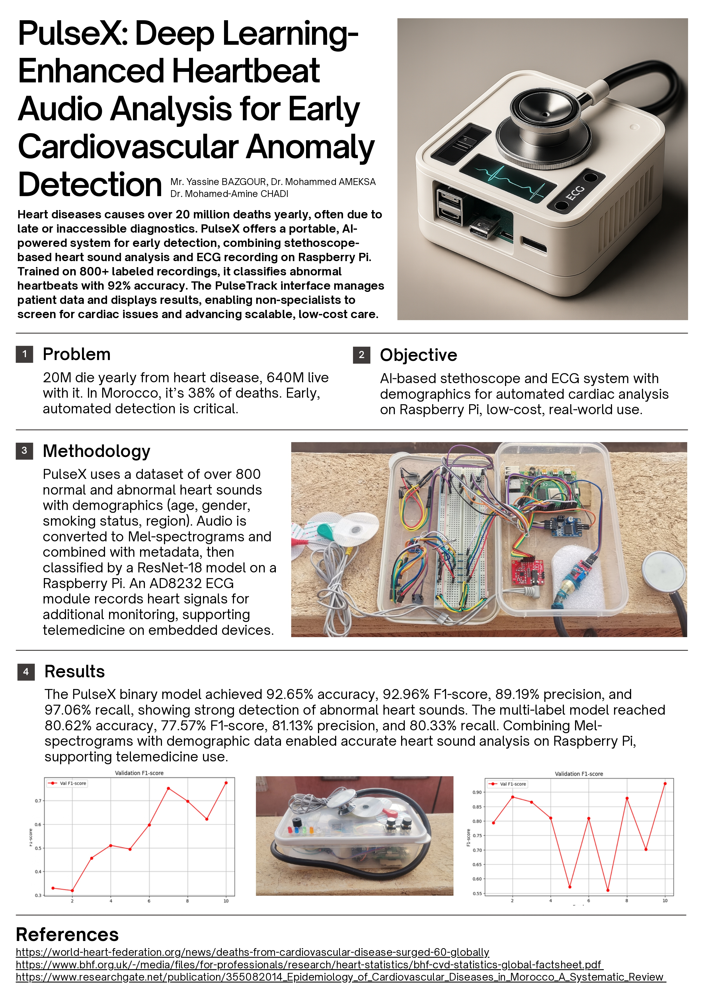
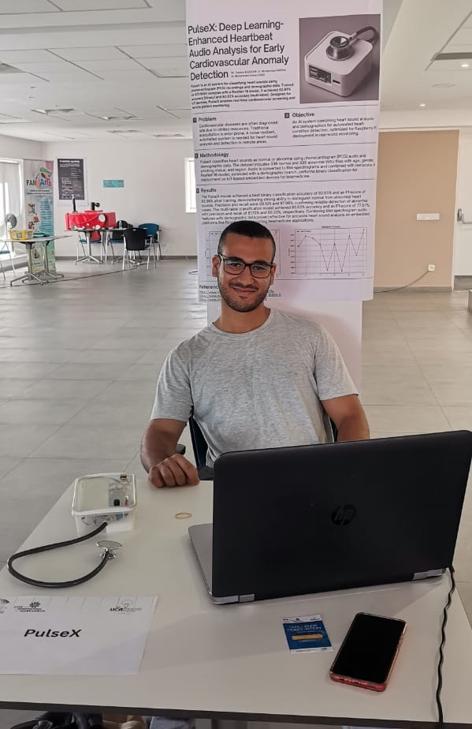

Breakthrough in Health MonitoringPulseX S1AI-Powered Intelligent Stethoscope
Watch PulseX Prototype in Action
See a live demo of the PulseX prototype as it captures and analyzes real heartbeat sounds from a subject.
The video showcases the full process — from audio signal acquisition with the stethoscope to AI-driven
classification and feedback — bringing personalized cardiovascular monitoring to life.
Presenting PulseX: Prototype & Scientific Impact
A look at the current PulseX prototype alongside its scientific poster — demonstrating its journey
from concept to real-world application in AI-driven healthcare innovation.


PulseX Prototype
Explore the design of PulseX — from initial concepts to functional prototype
— showcasing its impact as an AI-powered healthcare device.